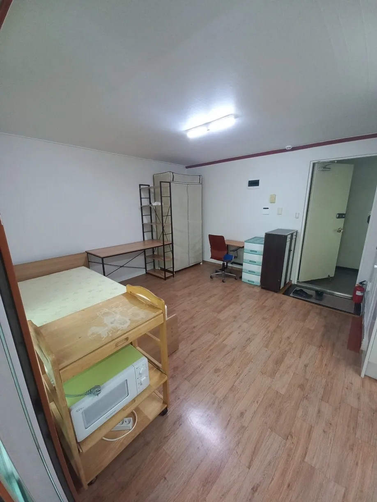
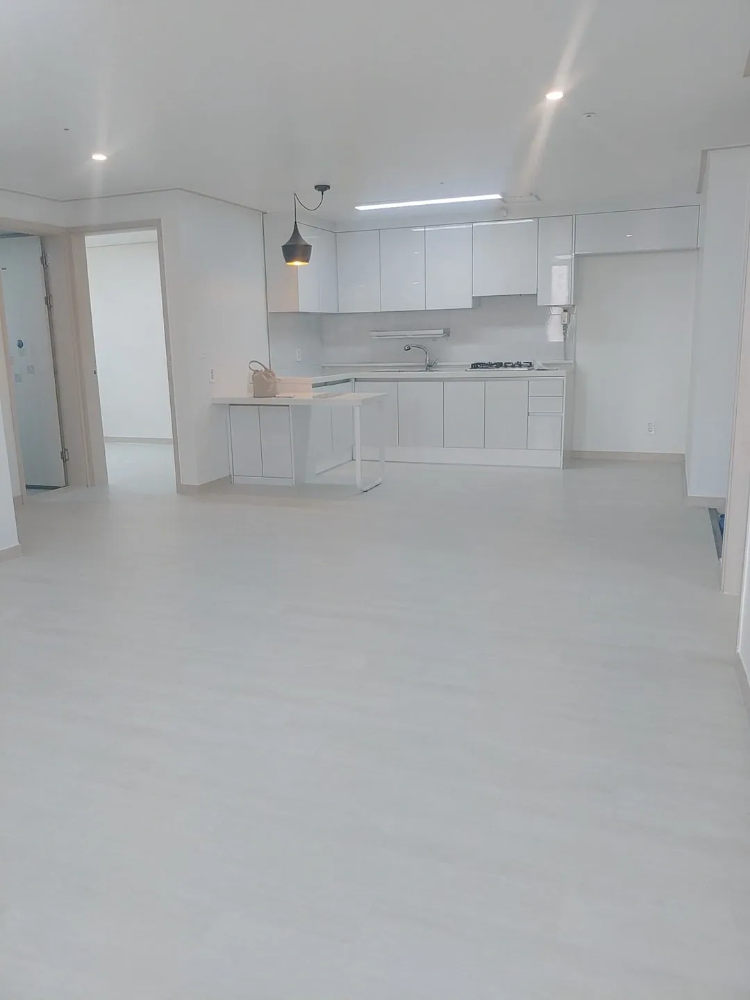
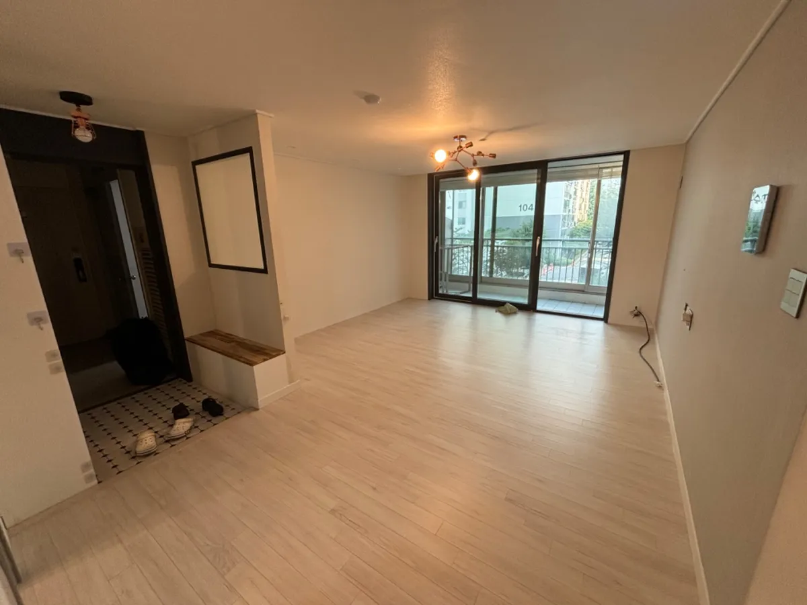
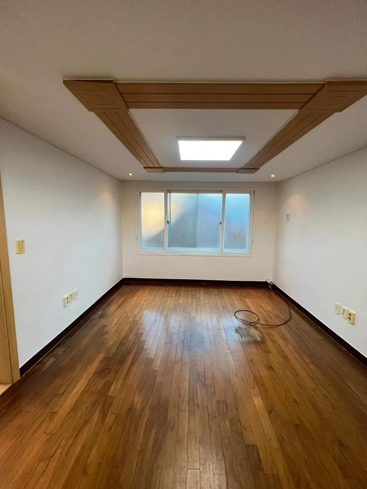
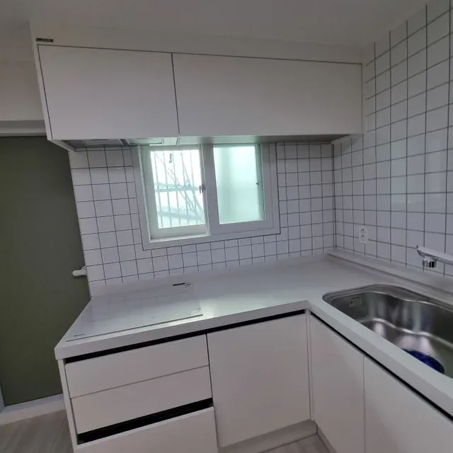

이사청소
[수지 성복동 이사청소] 래미안 32평, 원목마루 얼룩과 바닥 눌린 자국 후기
2026. 7. 27.
수지 성복동 래미안 32평 이사청소 현장입니다.
10년을 거주하신 집이라 바닥 곳곳에 세월의 흔적이 남아 있었습니다.
10년간 가족이 생활하신 집이었습니다.
거실 바닥에는 가구가 놓였던 자리와 눌린 자국이 그대로 남아 있었습니다.
방 바닥 원목마루에는 물얼룩과 검게 밴 얼룩이 자리 잡고 있었습니다.
오래 산 집일수록 바닥이 가장 정직하게 흔적을 보여줍니다.
이번 현장은 거실·바닥과 방 바닥, 두 개의 구역으로 나누어 진행했습니다.
이사청소의 바닥은 단순히 걸레질로 끝나는 작업이 아닙니다.
10년 거주한 집의 바닥에는 표면 먼지 아래로 눌린 자국과 배어든 얼룩이 층층이 쌓여 있습니다.
특히 원목마루는 소재가 예민해서 강한 약품이나 거친 도구를 쓰면 오히려 손상됩니다.
오염의 성격을 읽고, 소재에 맞는 방식으로 접근해야 하는 이유가 여기 있습니다.
오늘은 그 현장을 공개합니다.
이번 현장에서 진행한 작업
- 거실·바닥 : 가구 자국·눌린 자국 제거 및 바닥 광택 복원
- 방 바닥 : 원목마루 얼룩·물자국 제거 및 결 살리기
바닥은 집에 들어섰을 때 가장 먼저 눈에 들어오는 면적입니다.
아무리 벽과 창을 닦아도 바닥이 뿌옇게 남아 있으면 집 전체가 낡아 보입니다.
반대로 바닥이 밝게 살아나면 같은 평수도 훨씬 넓고 깨끗하게 느껴집니다.
그래서 이사청소에서 바닥은 절대 대충 넘길 수 없는 구역입니다.
거실·바닥 — 가구가 떠난 자리, 눌린 자국과 바닥에 밴 뿌연 흔적
가구와 짐이 빠진 거실 바닥에는 오래 눌려 있던 자국이 그대로 드러났습니다.
표면 전체가 뿌옇게 가라앉아 광택을 잃은 상태였습니다.
생활 동선을 따라 색이 짙게 밴 부분도 눈에 띄었습니다.
before

왜 이렇게 됐을까요?
10년 동안 같은 자리에 가구가 놓이면 그 아래는 공기와 빛이 닿지 않습니다.
반대로 사람이 다니는 동선에는 미세한 오염이 매일 쌓이고 눌립니다.
이 차이가 시간이 지나면서 바닥의 명암으로 남습니다.
일반적인 물걸레질로는 표면만 훑고 지나가 이 얼룩까지 닿지 못합니다.
단순히 밀대로 닦는 청소로는 바닥에 배어든 층을 걷어낼 수 없습니다.
저희 BG솔루션 팀은 먼저 바닥 소재를 확인한 뒤 전용 세정제로 표면의 눌린 오염을 불려 냈습니다.
그다음 결 방향을 따라 오염을 밀어내고, 잔여물이 남지 않도록 여러 차례 헹궈 마무리했습니다.
마지막으로 물기를 완전히 제거해 얼룩이 다시 번지지 않도록 잡았습니다.
after


뿌옇던 바닥이 조명을 그대로 반사할 만큼 밝게 살아났습니다.
맨발로 지나가도 걸리는 느낌 없이 매끈하게 미끄러졌습니다.
짐이 빠진 공간이 한층 넓어 보였습니다.
방 바닥 — 원목마루에 남은 물얼룩, 소재를 지키며 걷어낸 흔적
방 바닥 원목마루에는 검게 밴 물얼룩이 곳곳에 남아 있었습니다.
결을 따라 색이 얼룩덜룩하게 번진 부분이 확연했습니다.
표면에는 오래된 광택제가 굳어 끈적한 느낌도 남아 있었습니다.
before

왜 이렇게 됐을까요?
원목마루는 나무 그대로의 소재라 물기를 오래 머금으면 결 안으로 스며듭니다.
한 번 스민 물자국은 표면이 아니라 나무 안쪽에 자리 잡습니다.
여기에 시간이 지나면서 광택제와 생활 오염이 겹쳐 굳습니다.
그래서 겉만 닦으면 얼룩이 사라진 듯 보이다가 마르면 다시 올라옵니다.
강한 약품이나 거친 패드를 쓰면 원목 표면이 벗겨져 오히려 얼룩이 도드라집니다.
저희 BG솔루션 팀은 원목에 맞는 순한 전용 세정제로 굳은 광택제와 오염을 부드럽게 녹였습니다.
결 방향을 지키며 얼룩을 조심스럽게 밀어낸 뒤, 물기를 곧바로 걷어내 나무에 남지 않도록 했습니다.
마지막으로 결이 살아나도록 마른 마무리를 거쳤습니다.
after

얼룩덜룩하던 마루가 원목 특유의 결을 다시 드러냈습니다.
끈적임 없이 손끝이 매끄럽게 지나갔습니다.
방 전체가 차분하고 따뜻한 톤으로 정돈됐습니다.
마무리
이번 수지 성복동 래미안 32평 이사청소는 거실·바닥과 방 바닥, 두 구역의 바닥을 집중적으로 되살린 현장이었습니다.
가구 자국과 원목마루 얼룩까지 소재에 맞게 걷어냈습니다.
10년 거주한 집도 바닥이 살아나면 새집처럼 느껴집니다.
소재를 이해하고 접근하는 것이 이사청소의 핵심이라고 저희 BG솔루션 팀은 생각합니다.
오래 거주한 집의 이사청소를 앞두고 계신다면 BG솔루션으로 편하게 문의 주시기 바랍니다.
바닥이 달라지면 집이 달라집니다.
수지 이사청소, BG솔루션이 함께합니다.